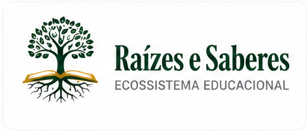
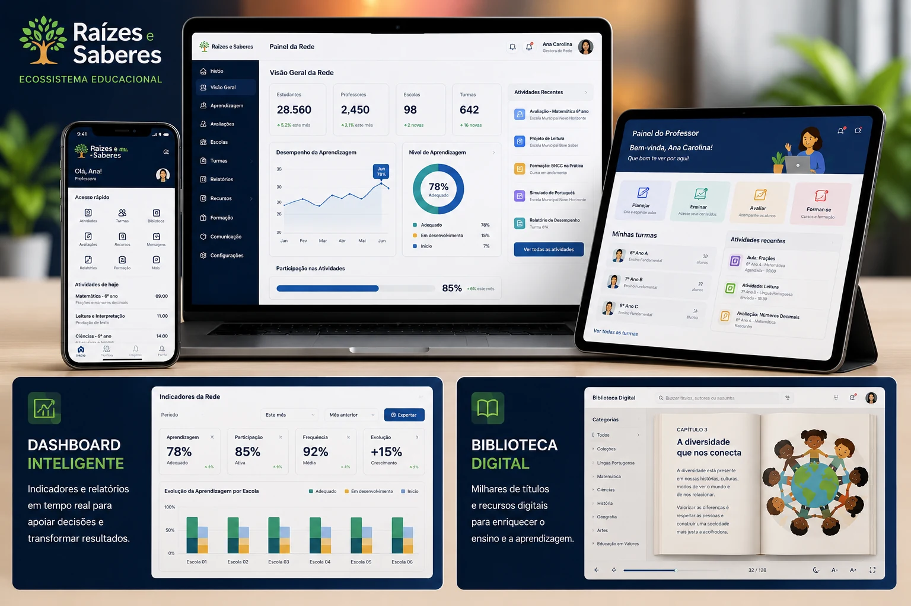
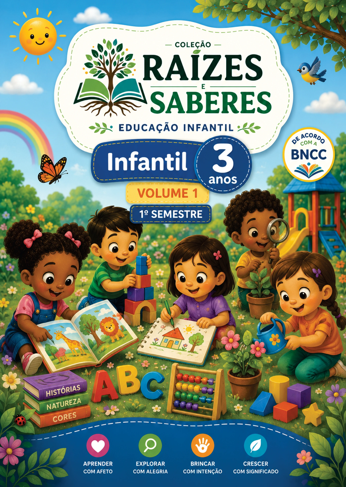
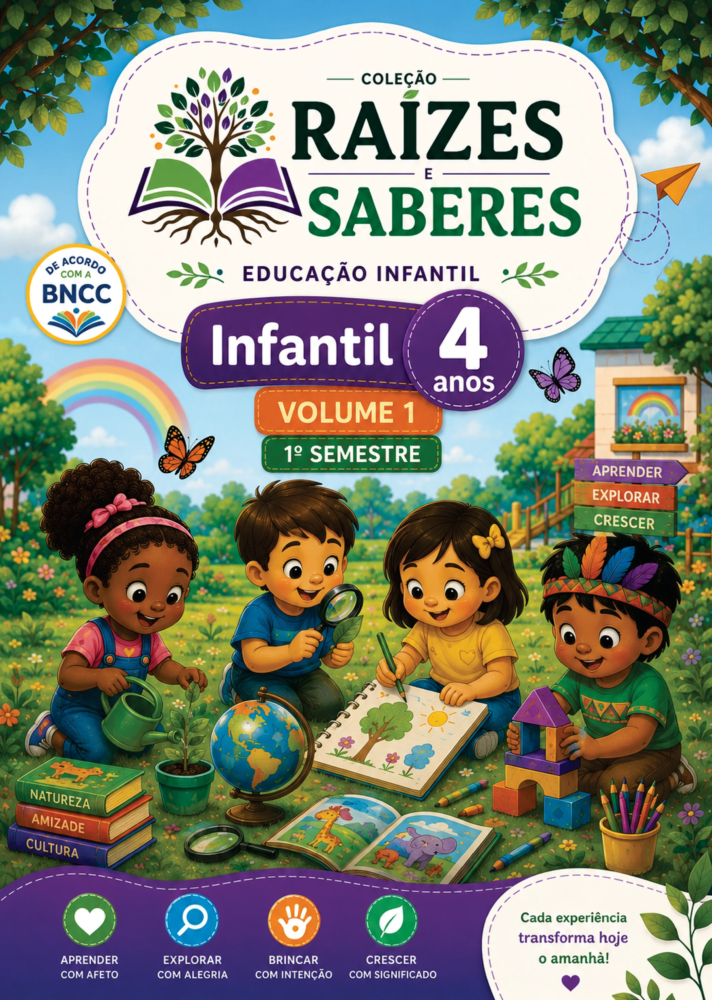
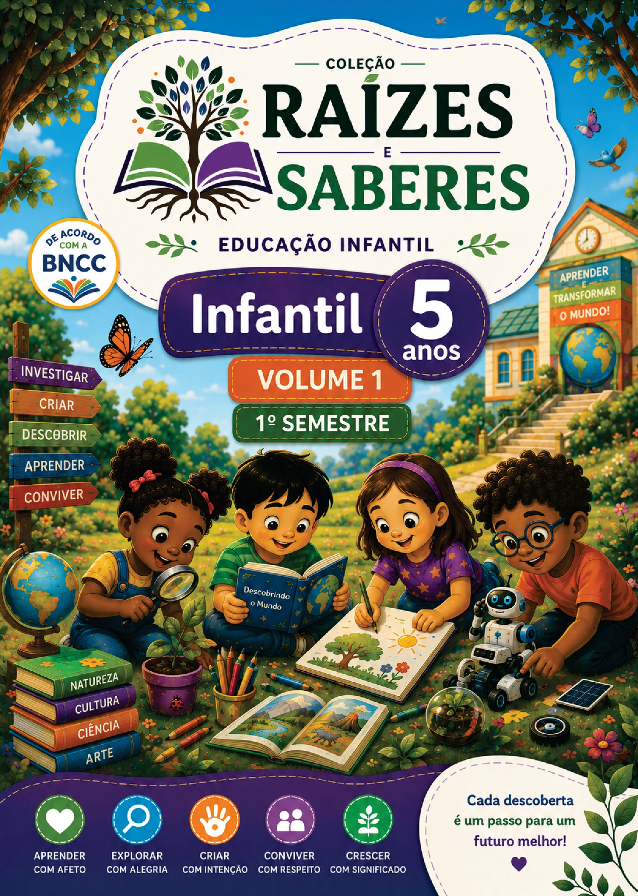

Ensino integrado
Livros, plataforma digital, biblioteca, avaliações e formação conectados na mesma jornada.

Raízes e Saberes Solicitar DemonstraçãoEcossistema Educacional
Uma plataforma integrada para redes de ensino, escolas, professores e estudantes.
Conteúdos, biblioteca digital, avaliações, formação docente e gestão pedagógica em uma experiência única para apoiar escolas, professores, estudantes e secretarias de educação.

Ecossistema Educacional
O Ecossistema Educacional Raízes e Saberes integra materiais didáticos, tecnologia educacional, formação continuada, avaliação da aprendizagem e recursos pedagógicos em uma única experiência.
Livros, plataforma digital, biblioteca, avaliações e formação conectados na mesma jornada.
Recursos práticos, organizados e alinhados ao trabalho pedagógico em sala de aula.
Indicadores, diagnósticos e relatórios para orientar decisões de escolas e redes de ensino.
Uma proposta que valoriza conhecimento, cultura, inclusão e compromisso com a aprendizagem.
Conheça o Ecossistema em Ação
Descubra, em poucos minutos, como o Ecossistema Educacional Raízes e Saberes conecta materiais didáticos, plataforma digital, formação continuada e gestão educacional em uma única solução para apresentações comerciais, secretarias de educação e redes de ensino.
Educação Infantil
Materiais didáticos organizados para apoiar o desenvolvimento infantil com linguagem acolhedora, propostas pedagógicas estruturadas e experiências significativas de aprendizagem.
Explore a Coleção Educação Infantil
Primeiras experiências, acolhimento e descobertas.

Exploração, linguagem, convivência e autonomia.

Curiosidade, cultura, brincadeiras e investigação.

Preparação, repertório e continuidade da aprendizagem.
Plataforma Digital
A Plataforma Digital Raízes e Saberes organiza recursos pedagógicos, indicadores de aprendizagem e ferramentas de apoio em uma experiência integrada para escolas e redes.
Acervo digital, livros, trilhas de leitura e recursos complementares para enriquecer a aprendizagem.
Abrir BibliotecaIndicadores e relatórios para acompanhar evolução, participação, frequência e desempenho.
Abrir FamíliaFerramentas para planejar, ensinar, avaliar e acessar conteúdos de apoio ao trabalho pedagógico.
Abrir ProfessorVisão organizada para secretarias, escolas e gestores acompanharem decisões em escala.
Abrir Secretaria Abrir GestorUniversidade Raízes e Saberes
Trilhas, vídeoaulas, materiais, avaliações e certificados em uma experiência viva, preparada para receber cursos reais sem alterar o layout aprovado.
Curso recomendado para iniciar a jornada de formação continuada.
Ver cursoAo concluir uma aula, a Universidade sugere automaticamente o próximo passo.
Formadora convidada em práticas de avaliação e planejamento pedagógico.
32 vídeoaulas publicadasAvalia+
O Avalia+ organiza diagnósticos, acompanhamento contínuo e relatórios inteligentes para apoiar redes, escolas e professores na tomada de decisões sobre a aprendizagem.
Conheça o Avalia+Mapeamento claro de desempenho por etapa, turma, aluno e habilidade.
Evolução pedagógica monitorada ao longo do tempo com indicadores organizados.
Visualizações preparadas para professores, gestores escolares e secretarias.
Informações práticas para orientar intervenções, planejamento e acompanhamento.
Resultados
A área de resultados foi estruturada para receber dados oficiais da plataforma, permitindo apresentar evolução, engajamento e acompanhamento pedagógico com clareza.
Campo preparado para inserir resultados reais de desempenho e progressão dos estudantes.
Preparado para apresentar dados oficiais de acesso, presença, engajamento e atividades realizadas.
Preparado para apresentar indicadores de uso por professores, turmas e coordenação pedagógica.
Área pronta para consolidar informações de escolas, relatórios e decisões da secretaria.
Demonstração institucional
A Raízes e Saberes Digital integra conteúdos, biblioteca, formação, avaliação e gestão em uma experiência preparada para apresentações, secretarias de educação e redes de ensino.
Demonstração
Solicite uma conversa comercial para conhecer a proposta, visualizar a plataforma e avaliar como o ecossistema pode apoiar sua escola ou rede de ensino.